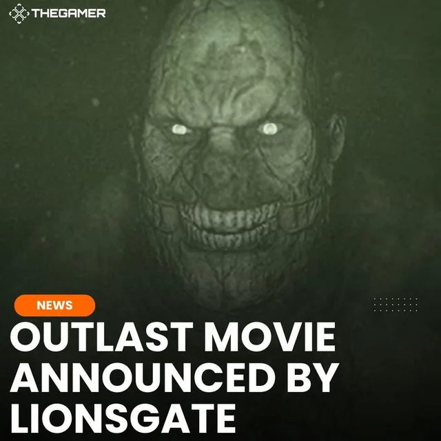
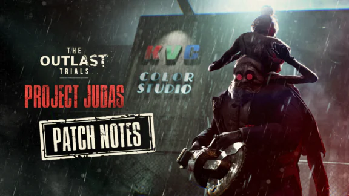
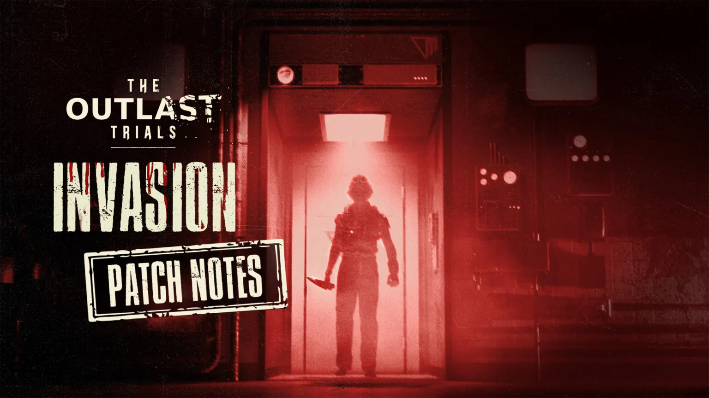
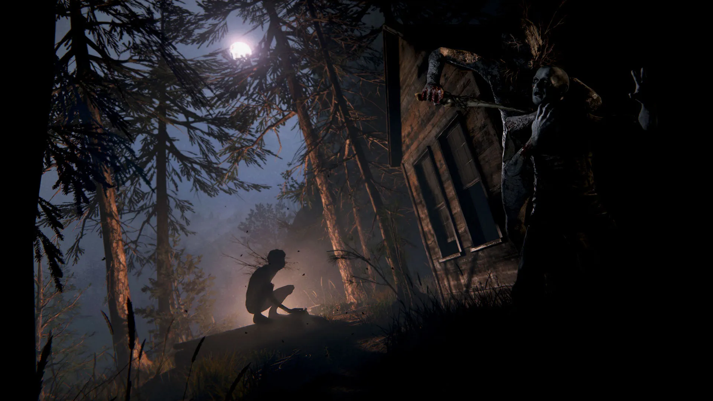
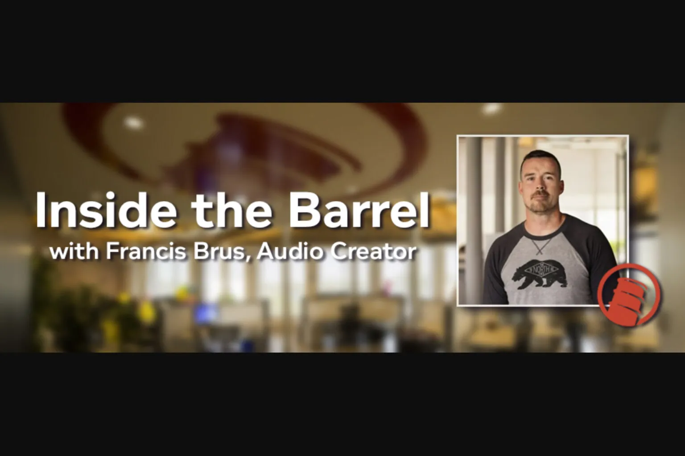
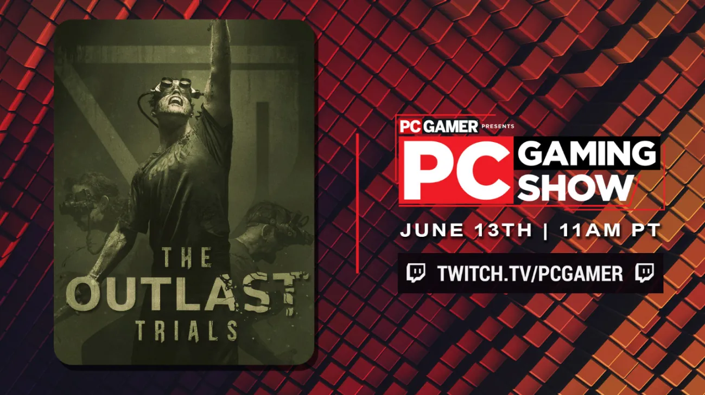
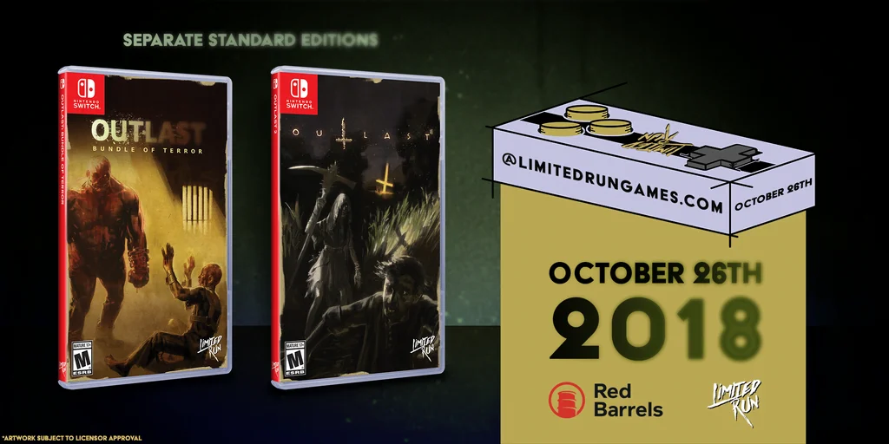
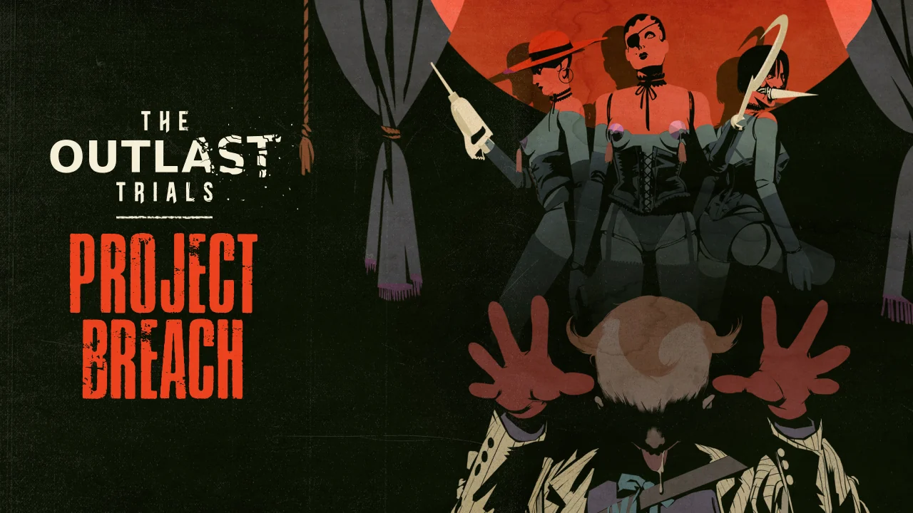

OUTLAST TRIALSTHE OUTLAST TRIALS: NOVA ATUALIZAÇÃO TRAZ NOVOS DESAFIOS E RECOMPENSAS
A Red Barrels anunciou uma nova atualização para The Outlast Trials com novos mapas, objetivos e melhorias gerais.
LER RELATÓRIO
TEORIASTEORIAS: O SIGNIFICADO POR TRÁS DOS EXPERIMENTOS DA MURKOFF
Uma análise profunda sobre os experimentos da Murkoff Corporation.
LER MAIS
OUTLASTCURIOSIDADES: 15 FATOS SOBRE OUTLAST QUE VOCÊ PROVAVELMENTE NÃO SABIA
Detalhes escondidos, referências e segredos que tornam Outlast único.
LER MAIS
OUTLASTVAZAMENTO REVELA NOVOS DOCUMENTOS DA MURKOFF
Arquivos confidenciais obtidos por fontes anônimas revelam projetos ainda não descobertos.
LER MAISOUTLAST 2 COMPLETA 8 ANOS: RELEMBRE OS MELHORES MOMENTOS
Revisitamos os momentos mais marcantes de Outlast 2.
LER MAIS
HQsPROJETO LAMBDA: O QUE SABEMOS ATÉ AGORA
Tudo que sabemos sobre o misterioso Projeto Lambda e seu possível impacto.
LER MAIS
EVENTOSTHE OUTLAST TRIALS ATINGE 1 MILHÃO DE JOGADORES
The Outlast Trials alcança a marca de 1 milhão de jogadores.
LER MAIS
OUTLAST TRIALSNOVO PATCH CORRIGE BUGS E MELHORA PERFORMANCE
A mais recente atualização foca em estabilidade e correções reportadas pela comunidade.
LER MAIS
OUTLAST TRIALSNOVO PATCH CORRIGE BUGS E MELHORA PERFORMANCE
A mais recente atualização foca em estabilidade e correções reportadas pela comunidade.
LER MAIS OUTLAST TRIALS
OUTLAST TRIALS
TEMPORADA 2 DE THE OUTLAST TRIALS: O QUE ESPERAR
Especulações e pistas sobre o que a Murkoff prepara para a próxima temporada.
LER MAIS OUTLAST
OUTLAST
A HISTÓRIA COMPLETA DO MOUNT MASSIVE ASYLUM
Um mergulho profundo na história do hospital que deu origem ao pesadelo.
LER MAIS HQs
HQs
THE MURKOFF FILES #5: DATA DE LANÇAMENTO REVELADA
A quinta edição da HQ oficial chega com novos segredos da corporação.
LER MAIS TEORIAS
TEORIAS
O WALRIDER: ENTIDADE OU EXPERIMENTO? TEORIAS DA COMUNIDADE
A comunidade debate a verdadeira natureza do ser que assombra o asilo.
LER MAIS OUTLAST 2
OUTLAST 2
OUTLAST 2: OS SIMBOLISMOS RELIGIOSOS QUE VOCÊ NÃO PERCEBEU
Uma análise das referências ocultas na narrativa de Temple Gate.
LER MAIS EVENTOS
EVENTOS
RED BARRELS ANUNCIA PAINEL NA PAX EAST 2024
A desenvolvedora confirmou presença no evento com novidades sobre seus projetos.
LER MAIS OUTLAST TRIALS
OUTLAST TRIALS
NOVOS REAGENTES CONFIRMADOS PARA THE OUTLAST TRIALS
A Murkoff expande seu programa com novos cobaias para os próximos testes.
LER MAIS OUTLAST
OUTLAST
OUTLAST ORIGINAL: 11 ANOS DE TERROR PSICOLÓGICO
Celebramos o aniversário do jogo que redefiniu o gênero de terror em primeira pessoa.
LER MAIS HQs
HQs
RELEITURA: THE MURKOFF FILES #1 A #4 EM RETROSPECTO
Revisitamos as quatro edições e o que elas revelam sobre o universo expandido.
LER MAIS TEORIAS
TEORIAS
PROJETO WERNICKE: A MENTE POR TRÁS DE TUDO
Quem foi Rudolf Wernicke e qual seu papel nos experimentos da Murkoff?
LER MAIS OUTLAST 2
OUTLAST 2
O FINAL DE OUTLAST 2 EXPLICADO: O QUE REALMENTE ACONTECEU
Uma análise detalhada do desfecho perturbador de Blake e Lynn.
LER MAIS EVENTOS
EVENTOS
OUTLAST NA STEAM NEXT FEST: DEMO SURPRESA DISPONÍVEL
Red Barrels surpreende com conteúdo jogável durante o festival da Steam.
LER MAIS